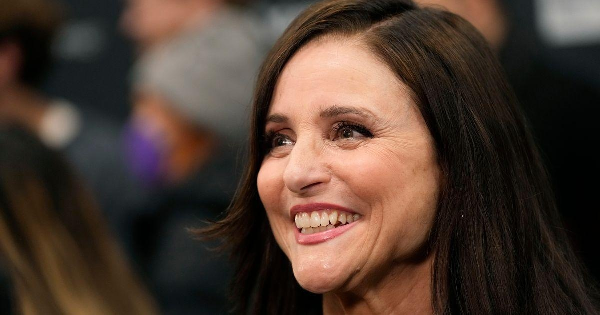

Julia Louis-Dreyfus Has Blunt Response To ‘Seinfeld’ Reunion RumorsJulia Louis-Dreyfus put a damper on some of the rumors sparked by Jerry Seinfeld’s recent cryptic comments. At a stand-up gig last week, a fan asked Seinfeld about his feelings on the iconic show’s controversial finale. “Well, I have a little secret for you about the ending, but I can’t really tell it because it’s a secret,” the sitcom’s titular star told the crowd. “Here’s what I can tell you, but you can’t tell anybody: Something is going to happen that has to do with that ending. It hasn’t happened yet.” Fans and media speculated that his comments referenced a possible finale ― not a totally wild assumption in an era that’s seen a “Friends” reunion and reboots of both “Sex and the City” and “Frasier.” But if a “Seinfeld” reunion is in the works, Louis-Dreyfus, who starred as Elaine Benes in the classic comedy, says she hasn’t heard about it. “Yeah, I just saw [that news] last night,” the Emmy-winning actor told The Guardian. “And I don’t know what the hell he’s talking about.” While Louis-Dreyfus could, of course, be faking ignorance, Seinfeld himself has said in the past that a “Seinfeld” reunion would never happen. In 2020, he joked to Howard Stern that he didn’t “want to inflict himself on viewers in a deteriorated state.” He went on to tell the radio host that he’s a “perfectionist” who likes to give people “a little less than you really want.” Regarding the top-rated comedy series, the comedian said, “We could have done one, two, three more years. The reason people still love that show is we didn’t wear it out.” |
 |